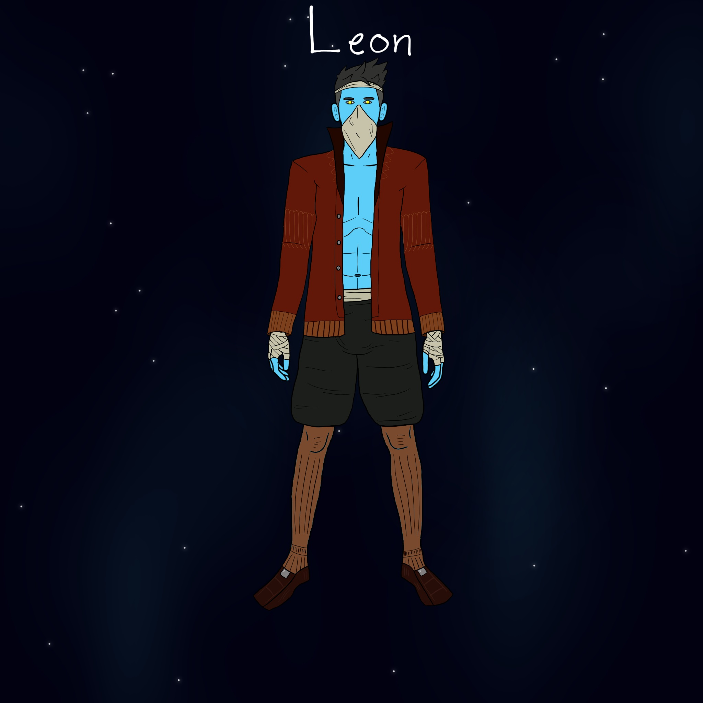

Meet the Players
-
Ezra DeWitt

Ezra DeWitt 22, White Human male 5’10, born to Tomas 55 and Evelyne 56 DeWitt, the youngest of 5 children 2 girls and 2 boys, Oldest is Leera 32, then Olivia 30, Jack 28, and Isaac 26. An upper middle class family before the accident but a lower middle class and declining soon after the accident. Ezra was injured in a spaceship reactor explosion while working with his father in his starship mechanics bay. The explosion paralyzed Tomas from the waist down and completely destroyed Ezra's left arm and leg. The family used almost all of their savings to get top of the line robotics for Ezra, replacing his left leg and arm with upgradable bionics and Tomas had his spine repaired but is left weak after the accident barely able to walk and is unable to work out of mental deterioration from almost getting Ezra killed. While Ezra was in the hospital his mother left her scarf with him as to always be with him and he’s kept it close to him ever since. The lack of family income leads Ezra to pick up odd jobs with his bestfriend Priffy around Klevo to make money for the family with all the other siblings helping as much as they can while also supporting their own families. Leera is a school teacher and is married to Otar 35 who is a Cûp store owner and has a son named Tynan 12 who is named after their grandfather, Olivia is a secretary to the mayor of Klevo and is married to Markus 28 an asian human who doesn’t have a job, they have a daughter named Lyanna 8, Jack has twins with Shereen 28 who works with Jack at his weapons forge where they provide weapons for Klevo’s police force. Jack and Shereen have twins named Thomas 10, after their father, and Beatrice 10. Isaac is a freeloader who mooches off his parents and has a substance abuse issue so he almost never helps out. After Ezras paternal grandparents Tynan DeWitt (married to Leesa who’s been dead for a few years at this point), passed away shortly following the accident, he leaves all of his possessions to Ezra including his spaceship, 3000 crids and the family sword..
Download Player 1's Bio (Word Document) -
Leon Wheeler
Biography of Player 2 goes here.
Download Player 2's Bio (Word Document)